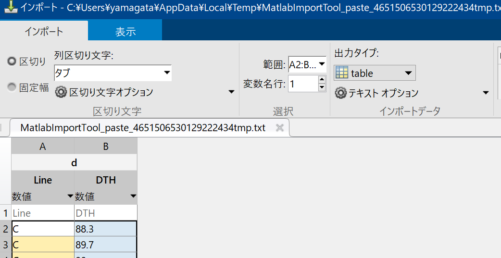
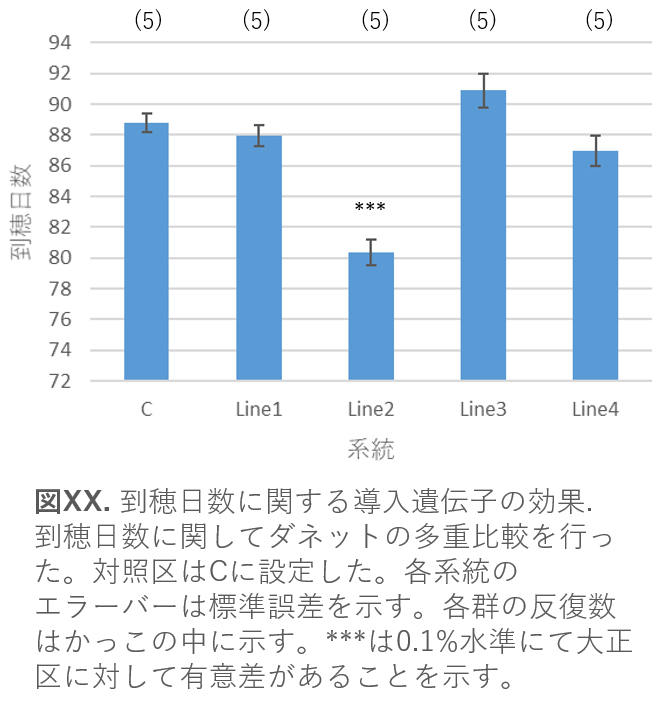
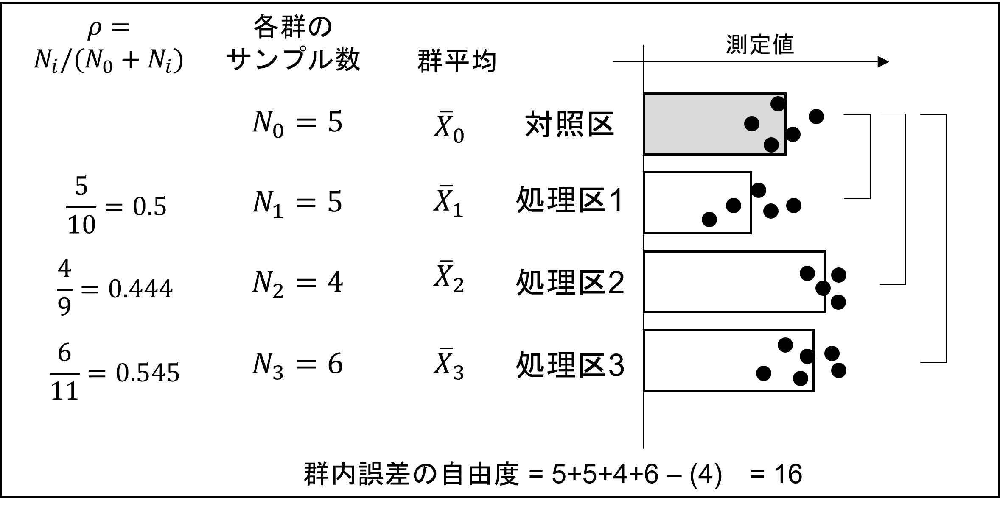
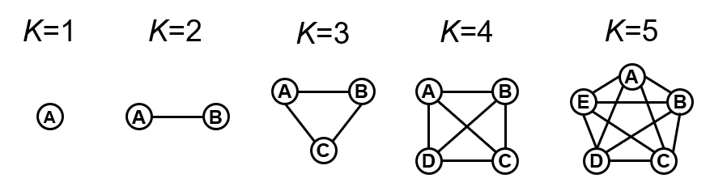
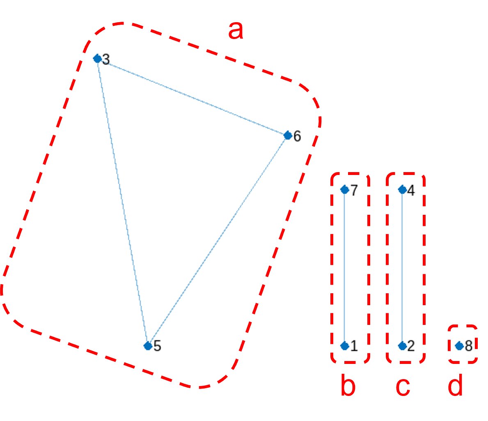
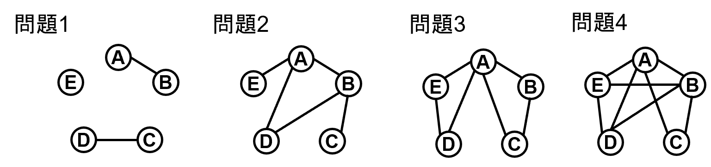
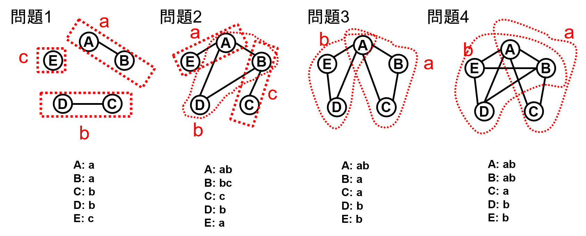

生物統計演習 第5回 多重比較
多重比較について
分散分析により「すべての実験群において平均値の差が等しい」とは言えないことが分かったとしても、実際にどの群間に有意差があるかを知りたくなる。3群以上の比較の場合は 検定の繰り返しの問題 が生じ、通常の\(t\)検定などをそのまま用いることができない(図)。
 |
|---|
| 検定の繰り返しによる第一種の過誤の増大 |
例えば2群の対比較について、帰無仮説\(H_0: \mu_1=\mu_2\)の検定を有意水準 \(\alpha=0.05\)で行う場合、\(H_0: \mu_1=\mu_2\)のもと偶然有意となる確率は5%である。これを 第一種の過誤(Type I error) といい、 「帰無仮説が正しいが、検定にて棄却される確率」 である。偽陽性いう言い方ともいう。3群の場合、\(H_0: \mu_1=\mu_2\)と\(H_0: \mu_2=\mu_3\)と\(H_0: \mu_3=\mu_0\)の検定を3回行うことになり、 \(1-(0.95)^{3}=0.1426\)すなわち、3回の対比較のうち少なくとも一対が有意となる確率、すなわち第一種の過誤は14.26%となる(5%より大きい！)。すなわち、検定の繰り返しにより、第一種の過誤が高まるため、誤った有意差が得られやすく、誤った結論に至りやすい。群数が増加すると事態はより深刻である。多重比較における仮説の集合を 族(family) といい、仮説の集合全体で一つの検定とみなす考え方を ファミリーワイズ(family wise) といい、多重検定全体における第一種過誤をFEWR(family-wise error rate)という。今回は、第一種の過誤を調整した 多重検定 に関する演習を行う。
多重比較の手法の分類
多重比較は(1)有意水準を制御する方法と(2)統計量を制御する方法の二種類がある。 1. 有意水準を制御する方法 - Family Wise Error Rate(FWER)に対する補正 ボンフェローニ補正など - False Discovery Rate (FDR) 補正 Holm法、Benjamini & Hochberg (BH)法など 2. 統計量を制御する方法 - 対照群との多重比較 Dunnet法 など - すべての対比較 Fisher’s protect LSD (四群以上では使用不可)、Duncan法(有意差でやすく、使用不可)、Tukey-Kramer法など
今回は、統計量を制御する方法について演習を行う。
対照群との多重比較
付表1は、栽培イネ品種日本晴(Nip)に遺伝子X1, X2, X3, X4を導入した形質転換系統についての到穂日数(Days-to-heading (DTH))のデータである。Nipを対照群(C)とし、二つ以上の処理群のデータに関して、対照群と処理群の二群間の平均値の差の検定を行う。
データの読み込み
matlabは多くのデータからインポートできる。今回はコピーされ、クリップボードに保存されたデータの開き方を学習しよう。
公式マニュアルではここに書いてある。 https://jp.mathworks.com/help/matlab/import_export/select-spreadsheet-data-interactively_ja_JP.html
1. 元データの読み込み
https://github.com/qikushu/stat にwebブラウザでアクセスし、dunnett1.txtを選ぶ。画面右付近にある灰色の四角ボタン「raw」をおして、データを表示させた後、データをコピーする。データはclipboardに保存される。
# dunnett1.txt
Line DTH
C 88.3
C 89.7
C 90
C 86.6
C 89.3
Line1 89.1
Line1 88.2
Line1 85.3
略
Line4 86.82. matlabでのclipboardからのデータ読み込み
- ワークスペースブラウザーのタイトルバーで下三角形をクリックし、[貼り付け] を選択する。
- 「区切り文字」は「区切り」、列区切り文字は「タブ」を選ぶ。
- 「選択」はデータ範囲は範囲、変数名が入っている行は変数名行を選ぶ。
- 出力タイプは「table」型とする、
- 良ければ、右端の「選択のインポート」ボタンを押す。
- 変数名は太字の箇所を編集してください。今回は
dとします
|  |
|---|
| クリップボードからのデータインポート |
うまくいかない人は、以下から読み取ってください
url="https://raw.githubusercontent.com/qikushu/stat/master/dunnett1.txt";
d = readtable(url); % データ読み込み
d.Line = categorical(d.Line); % カテゴリカル型に変換記述統計
データを図示し、データを俯瞰(ふかん)しよう。
% 箱ひげ図、箱ひげのみ
boxchart(d.Line, d.DTH);
ylabel('Days to heading'); % Y軸のラベルを設定
title('箱ひげ図'); % グラフのタイトルを設定
% 散布図
swarmchart(d.Line, d.DTH, 'SizeData', 5, 'MarkerFaceColor', 'blue'); 統計量の計算については以下の方法があります
%前回示した方法
statByLine = grpstats(d, 'Line', {'mean', 'std', 'length'}, 'DataVars', 'DTH')
% groupsummary関数を用いる場合
% 平均
means = groupsummary(d, 'Line', 'mean', 'DTH');
means
% 標準偏差
stds = groupsummary(d, 'Line', 'std', 'DTH');
stds
% 覚えられた方を使えばいいと思います分散分析
群間の平均値、すなわち系統の平均値の間に差があるかを分散分析により分析できる。独立変数をLine、従属変数をDTHとし、モデル式
DTH ~ Lineにて分散分析を行ってみよう。
% モデル式DTH~Lineにて線形回帰し、anova関数で結果を表示する
mdl = fitlm(d, 'DTH ~ Line');
anovaResult = anova(mdl);
anovaResult
% 結果
SumSq DF MeanSq F pValue
______ __ ______ ______ __________
Line 317.31 4 79.326 20.818 6.7251e-07
Error 76.208 20 3.8104 練習課題1
分散分析表の結果を説明してみよう。
Dunnettの多重比較
分散分析により、群間の平均値はすべて等しいとは言えないことが明らかとなった。次にどの群間において差があるといえるかを詳細に調査していく。glht()関数に、分散分析の結果anovaResultを代入し、Dunnettの多重比較を行う。
% ANOVAの実行 anova1(データ, 水準);
[p, tbl, stats] = anova1(d.DTH, d.Line);
% Dunnettの多重比較
results = multcompare(stats, 'CType', 'dunnett');
% 結果の出力がそっけないので、列名を以下のように加える。
resultsT = array2table(results)
resultsT.Properties.VariableNames = {'対照区', '処理群', '下側信頼限界', '上側信頼限界','平均値の差','p(two-side)'};
resultsT 対照区 処理群 下側信頼限界 上側信頼限界 平均値の差 p(two-side)
_____ _____ __________ __________ _________ ___________
2 1 -4.113 -0.84 2.433 0.89948
3 1 -11.713 -8.44 -5.167 1.3007e-05
4 1 -1.173 2.1 5.373 0.28997
5 1 -5.073 -1.8 1.473 0.41688 対照区(C)と処理群(T)の対比較の結果が各行に示されている。3列目は平均値の95%下側信頼限界、4列目は平均値の95%上側信頼限界、5列目は平均値の差、6列目が両側確率(p)である。\(p\)の値が5%より小さければ5%水準で有意差あり、1%より小さければ1%水準で有意差ありと判断する。
平均値の差の検定に置ける帰無仮説(\(H_0\))は「T-C=0」である。5列目と6列目の間を95%信頼区間(confidence interval; CI)といい、この中に0が含まれていれば、有意水準5%で有意と一目でわかる。
仮説の集合全体で一つの検定とみなす考え方をファミリーワイズ(family wise)という。ダネットの多重比較は、一連の繰り返しの検定全体で有意水準を制御するfamily wiseな検定であり、検定の繰り返しが考慮された信頼区間であることを示している。
結果の図示
結果は通常、エクセルの棒グラフにて平均値を示し、標準誤差のエラーバーを付して示す。Rでも作画する方法はある。ダネットの多重比較の結果得られた有意水準をアスタリスクにて示すのが一般的である。
|  |
|---|
| ダネットの多重比較の結果を反映した結果の図示の一例 |
理論
Dunnetの多重比較では、対照区1つと\(c\)個の比較区があり、\(i\)番目の比較区には\(N_i\)個のサンプルがあるとする(図)。
|  |
|---|
| Dunnetの多重比較の一例 |
二標本\(t\)検定がベースになっている。\(t\)検定では帰無仮説\(H_0: \bar{A}-\bar{B}=0\)において、\(t\)値の信頼区間は有意水準\(\alpha=0.05\)における下側限界\(-t_{\alpha=0.05, df}\)と上側限界\(t_{\alpha=0.05, df}\)の区間である。 \[ -t_{\alpha=0.05, df} < t = \frac{(\bar{A} - \bar{B}) - (\mu_A - \mu_B)}{\sqrt{(1/m+1/n) s_p^2}} < t_{\alpha=0.05, df} \] ダネットの多重検定では、 \[ -D_{\alpha=0.05, df, \rho} < \frac{(\bar{A} - \bar{B}) - (\mu_A - \mu_B)}{\sqrt{(1/m+1/n) s_c^2}} < D_{\alpha=0.05, df,\rho} \] とし、ダネットの\(D\)分布表を見て求める。二標本\(t\)検定では\(s_p^2\)は\(A\)と\(B\)の合併分散であったが、ダネットの多重検定では、\(s_c^2\)は群内平均からの誤差二乗和を誤差の自由度\(df\)で割って求める。自由度\(df\)はすべてのサンプル数 - 比較群数 - 1であり、上記の例ではdf = (5+5+4+6) - 3 - 1 = 16である。 \(c\)は対照区と比較する比較区の数、\(X_{i, j}\)は\(i\)番目の比較区における\(j\)番目の個体をさす。 \[ s_c^2 = \frac{ \sum_{i=0}^{c} \sum_{j=1}^{N_i} (X_{i, j} - \bar{X}_{i} )^2 }{n} \]
\(D\)は自由度と処理区の数、処理区と(処理区+対照区)の比\(\rho\)(ロー)に基づいて選択する。今回は処理区と対照区の反復数が等しい場合(\(\rho=0.5\))、かつ有意水準\(\alpha=0.05\)の時についてのd表をしめす。
Dunnetのd表(両側確率、\(\alpha=0.05, \rho=0.05\))
| df | 3 | 4 | 5 | 6 | 7 | 8 | 9 | 10 | 11 | 13 | 15 | 17 | 19 | 21 |
|---|---|---|---|---|---|---|---|---|---|---|---|---|---|---|
| 2 | 5.42 | 6.06 | 6.51 | 6.85 | 7.12 | 7.35 | 7.54 | 7.71 | 7.85 | 8.1 | 8.31 | 8.49 | 8.64 | 8.77 |
| 3 | 3.87 | 4.26 | 4.54 | 4.75 | 4.92 | 5.06 | 5.18 | 5.28 | 5.37 | 5.53 | 5.66 | 5.77 | 5.87 | 5.95 |
| 4 | 3.31 | 3.62 | 3.83 | 3.99 | 4.13 | 4.23 | 4.33 | 4.41 | 4.48 | 4.6 | 4.71 | 4.79 | 4.87 | 4.94 |
| 5 | 3.03 | 3.29 | 3.48 | 3.62 | 3.73 | 3.82 | 3.9 | 3.97 | 4.03 | 4.14 | 4.23 | 4.3 | 4.37 | 4.42 |
| 6 | 2.86 | 3.1 | 3.26 | 3.39 | 3.49 | 3.57 | 3.64 | 3.71 | 3.76 | 3.86 | 3.94 | 4.0 | 4.06 | 4.11 |
| 7 | 2.75 | 2.97 | 3.12 | 3.24 | 3.33 | 3.41 | 3.47 | 3.53 | 3.58 | 3.67 | 3.74 | 3.81 | 3.86 | 3.91 |
| 8 | 2.67 | 2.88 | 3.02 | 3.13 | 3.22 | 3.29 | 3.35 | 3.41 | 3.46 | 3.54 | 3.61 | 3.67 | 3.72 | 3.76 |
| 9 | 2.61 | 2.81 | 2.95 | 3.05 | 3.14 | 3.2 | 3.26 | 3.32 | 3.36 | 3.44 | 3.51 | 3.56 | 3.61 | 3.65 |
| 10 | 2.57 | 2.76 | 2.89 | 2.99 | 3.07 | 3.14 | 3.19 | 3.24 | 3.29 | 3.36 | 3.43 | 3.48 | 3.53 | 3.57 |
| 12 | 2.5 | 2.68 | 2.81 | 2.9 | 2.98 | 3.04 | 3.09 | 3.14 | 3.18 | 3.25 | 3.31 | 3.36 | 3.41 | 3.45 |
| 16 | 2.42 | 2.59 | 2.71 | 2.8 | 2.87 | 2.92 | 2.97 | 3.02 | 3.06 | 3.12 | 3.18 | 3.22 | 3.26 | 3.3 |
| 20 | 2.38 | 2.54 | 2.65 | 2.73 | 2.8 | 2.86 | 2.9 | 2.95 | 2.98 | 3.05 | 3.1 | 3.14 | 3.18 | 3.22 |
| 24 | 2.35 | 2.51 | 2.61 | 2.7 | 2.76 | 2.81 | 2.86 | 2.9 | 2.94 | 3.0 | 3.05 | 3.09 | 3.13 | 3.16 |
| 30 | 2.32 | 2.47 | 2.58 | 2.66 | 2.72 | 2.77 | 2.82 | 2.86 | 2.89 | 2.95 | 3.0 | 3.04 | 3.08 | 3.11 |
| 40 | 2.29 | 2.44 | 2.54 | 2.62 | 2.68 | 2.73 | 2.77 | 2.81 | 2.85 | 2.9 | 2.95 | 2.99 | 3.02 | 3.05 |
| 60 | 2.27 | 2.41 | 2.51 | 2.58 | 2.64 | 2.69 | 2.73 | 2.77 | 2.8 | 2.86 | 2.9 | 2.94 | 2.97 | 3.0 |
| 120 | 2.24 | 2.38 | 2.47 | 2.55 | 2.6 | 2.65 | 2.69 | 2.73 | 2.76 | 2.81 | 2.86 | 2.89 | 2.93 | 2.95 |
| \(\infty\) | 2.21 | 2.35 | 2.44 | 2.51 | 2.57 | 2.61 | 2.65 | 2.69 | 2.72 | 2.77 | 2.81 | 2.85 | 2.88 | 2.91 |
すべての対比較を行う多重比較
ここでは用いた実験条件や試料などの各群の平均値について 総当たりで対比較 を行う場合について考える。今回は、Tukey(テューキー)法を用いた多重比較について演習を行う。テューキーの範囲検定、テューキー法、テューキーのHSD (honestly significant difference) 検定などの名称がある。本来のTukey法は各群の反復数(n)が同じである必要があるが、Tukey-Kramer法は各群の反復数が異なっていてもよい。
例題データの読み込み
イネ8品種の到穂日数のデータを付表2に示す。データはhttps://github.com/qikushu/stat のTukeyKramer1.txtを用いる。前回と同様の手順を踏んで、データはd2というオブジェクトに保存する。
ワークスペースの下△をクリックして、貼り付けを選択し、データをクリップボードからインポートする。クリップボードからのコピーができない人はweb上のデータから直接読み込む。
url="https://raw.githubusercontent.com/qikushu/stat/master/TukeyKramer1.txt"
d2 = readtable(url)
d2.Variety = categorical(d2.Variety); % カテゴリカル型に変換データが読み込めたら記述統計にて全体を俯瞰(ふかん)する。
% 箱ひげ図、箱ひげのみ
boxchart(d2.Variety, d2.DTH);
ylabel('Days to heading'); % Y軸のラベルを設定
title('箱ひげ図'); % グラフのタイトルを設定
% 散布図
swarmchart(d2.Variety, d2.DTH, 'SizeData', 5, 'MarkerFaceColor', 'blue');
statByLine = grpstats(d2, 'Variety', {'mean', 'std','length'}, 'DataVars', 'DTH')チューキークラマー法による多重比較
チューキークラマー法による総あたりの対比較を行う。anova1関数で計算した値をmultcompare関数により、チューキークラマー法による多重比較を行う。多重比較においては、FisherのPLSD(Protected
Least Signicicant Difference)法やDuncan
の方法が知られる。これらの方法は多重検定におけるFWERを適切に調整していないのでつかうべきではないとされる。
% ANOVAの実行 anova1(データ, 水準);
[p, tbl, stats] = anova1(d2.DTH, d2.Variety);
% Tukey-kramerの多重比較
resultsTK = multcompare(stats, 'CType', 'hsd');
% 結果の出力がそっけないので、列名を以下のように加える。
resultsTTK = array2table(resultsTK)
resultsTTK.Properties.VariableNames = {'対照区', '処理群', '下側信頼限界', '上側信頼限界','平均値の差','p(two-side)'};
resultsTTK結果
resultsTTK =
28×6 table
対照区 処理群 下側信頼限界 上側信頼限界 平均値の差 p(two-side)
_____ _____ __________ __________ _________ ___________
1 2 3.7657 6.6667 9.5676 1.6705e-07
1 3 14.932 17.833 20.734 1.4747e-21
1 4 1.7657 4.6667 7.5676 0.00018857
1 5 14.266 17.167 20.068 9.5866e-21
1 6 15.432 18.333 21.234 3.4857e-22
1 7 -2.9009 0 2.9009 1
1 8 26.266 29.167 32.068 0
2 3 8.2657 11.167 14.068 9.4727e-14
2 4 -4.9009 -2 0.90092 0.3712
2 5 7.5991 10.5 13.401 6.6062e-13
: : : : : :
4 5 9.5991 12.5 15.401 2.3184e-15
4 6 10.766 13.667 16.568 1.037e-16
4 7 -7.5676 -4.6667 -1.7657 0.00018857
4 8 21.599 24.5 27.401 1.1296e-31
5 6 -1.7343 1.1667 4.0676 0.89887
5 7 -20.068 -17.167 -14.266 9.5866e-21
5 8 9.0991 12 14.901 9.096e-15
6 7 -21.234 -18.333 -15.432 3.4857e-22
6 8 7.9324 10.833 13.734 2.4817e-13
7 8 26.266 29.167 32.068 0 総あたり対比較のため、結果は複雑です。一般的には、有意差のない群には同一のアルファベットを付すことで、相互の有意差を表現します(図)。
Hans-Peter Piepho (2004) An Algorithm for a Letter-Based Representation of All-Pairwise Comparisons, Journal of Computational and Graphical Statistics, 13:2, 456-466, DOI: 10.1198/1061860043515 |
|---|
| チューキークラマー法による多重比較の結果を反映した結果の図示の一例 |
今回はTomosurebaOrange氏による方法にて求めます。まず、 隣接行列 を作成します。これは有意差があるペアを0、有意差がないペアを1とした行列です。対角成分は自分自身との差なので必ず0となります。対称行列となります。
| Var1 | Var2 | Var3 | Var4 | Var5 | Var6 | Var7 | Var8 | |
|---|---|---|---|---|---|---|---|---|
| Var1 | 0 | 0 | 0 | 0 | 0 | 0 | 1 | 0 |
| Var2 | 0 | 0 | 0 | 1 | 0 | 0 | 0 | 0 |
| Var3 | 0 | 0 | 0 | 0 | 1 | 1 | 0 | 0 |
| Var4 | 0 | 1 | 0 | 0 | 0 | 0 | 0 | 0 |
| Var5 | 0 | 0 | 1 | 0 | 0 | 1 | 0 | 0 |
| Var6 | 0 | 0 | 1 | 0 | 1 | 0 | 0 | 0 |
| Var7 | 1 | 0 | 0 | 0 | 0 | 0 | 0 | 0 |
| Var8 | 0 | 0 | 0 | 0 | 0 | 0 | 0 | 0 |
できたら、これをmatlabの行列にします。
A = [
[0 0 0 0 0 0 1 0];
[0 0 0 1 0 0 0 0];
[0 0 0 0 1 1 0 0];
[0 1 0 0 0 0 0 0];
[0 0 1 0 0 1 0 0];
[0 0 1 0 1 0 0 0];
[1 0 0 0 0 0 0 0];
[0 0 0 0 0 0 0 0];
];お互いの関係性を図で表現してみましょう。
plot(graph(A)) |
|---|
| ネットワークグラフ図 |
このように点が線でつながれた図をネットワークグラフといいます。隣接行列のうち、1には線が引かれ、0には線が引かれません。グラフ理論は離散数学の一つです。n個の点にすべて辺が存在するものを特に 完全グラフ(あるいはクリーク (clique)) といいます。
以下はK=1からK=5までの完全グラフを示します。上位のクリークは下位のクリークを含みます。例えば、点A, B, C, Dの4点クリークは、3点からなるクリークA-B-C, B-C-D, C-D-A, D-A-Bを含みます。また点A, B, Cの3点からなるクリークはA-B, B-C, C-Aの2点からなるクリークを含みます。
|  |
|---|
| 完全グラフの一例 |
多重比較における有意差グループのアルファベットをつける問題は、ネットワークグラフにおいてクリークを探索する問題と等しいそうです。
今回得られたグラフからクリークを見つけましょう。3, 6, 5はK=3、1と7、2と4はK=2、8はK=1のクリークです。それぞれのクリークにa, b, c, dを割り当てます。アルファベットを振る順番は、平均値が小さい順、あるいは大きい順につけていくとあとからわかりやすくなります
| カテゴリー | Letter |
|---|---|
| 1 | b |
| 2 | c |
| 3 | a |
| 4 | c |
| 5 | a |
| 6 | a |
| 7 | b |
| 8 | d |
|  |
|---|
| 完全グラフの一例 |
練習問題1
以下の図を見て、アルファベットを割り当ててみましょう。 
問題1
| カテゴリー | Letter |
|---|---|
| A | |
| B | |
| C | |
| D | |
| E |
問題2
| カテゴリー | Letter |
|---|---|
| A | |
| B | |
| C | |
| D | |
| E |
問題3
| カテゴリー | Letter |
|---|---|
| A | |
| B | |
| C | |
| D | |
| E |
スチューデント化された範囲分布(q) (参考)
\(k\)個の群はすべて、平均\(\mu\)、分散\(\sigma^2\)の正規分布\(X \sim N(\mu, \sigma^2)\)の母集団に由来すると仮定する。この時、\(k\)個の平均値\(\bar{X}_1, \bar{X}_2, \cdots \bar{X}_k\) は中心極限定理から\(\bar{X} \sim N(\mu, \sigma^2/k)\)である。\(k\)群のすべての対比較において、ファミリーワイズエラー率(FEWR)を有意水準\(\alpha=0.05\)に制御するためには\(k\)個の平均値のうち、\(\bar{X}\)の最大値\(\bar{X}_{max}\)と最小値\(\bar{X}_{min}\)の差について確率分布を考え、その差がいくらのときに、有意水準\(\alpha=0.05\)で有意になるかを考えればよい。この最大値\(\bar{X}_{max}\)と最小値\(\bar{X}_{min}\)の差はスチューデント化された範囲分布(q)に従う。
群のサンプル数をそれぞれ\(N_{max}\)、\(N_{min}\), 誤差分散を\(s^2_e\)とおいたとき、 \[ q = \frac{\bar{X}_{max} - \bar{X}_{min}}{s_e\sqrt{1/N_{max} + 1/N_{min} } } \] をスチューデント化された範囲分布という。ただし、\(s_e^2\)は群内平均からの誤差二乗和を誤差の自由度\(n\)で割って求める。 \[ s_e^2 = \frac{ \sum_{i=1}^{k} \sum_{j=1}^{N_i} (X_{i, j} - \bar{X}_{i} )^2 }{n} \] \(n\)はすべてのサンプル数 - 群数である。
注意点
- 3群以上の分析の場合、分散分析にて要因による群間の違いを説明できることを示したのち、事後解析(post hoc analysis) として、多重比較を行うのが典型的な手法である。
- 特定の群間において差があることが理論的に推論できる場合、すなわち検証的試験は、特定の群間に着目して対比較あるいは多重比較を行うことができる。
- 分散分析では有意だが、多重比較にて一つも有意差がない場合、あるいは分散分析では有意ではないが、多重比較にて有意差が検出される場合がある。
練習問題
Rにて標準で利用できるデータにchickwtsがある。新たに孵化したひなを6グループに分類し、各グループに異なる飼料を与えて6週間後の体重(g)のデータである。
- 箱ひげ図および散布図にて図示しなさい。
feedのカテゴリー別に平均値と標準偏差、標準誤差を示しなさい。- 多重比較にて総当たりの対比較を行いなさい。平均値の棒グラフを作成し、標準誤差と有意差グループをアルファベットにて記しなさい。
ただしデータは以下のように読み込みなさい。
url="https://raw.githubusercontent.com/qikushu/stat/master/chickwts.txt"
d3 = readtable(url)
d3.feed = categorical(d3.feed); % カテゴリカル型に変換練習問題の解答例
% 箱ひげ図、箱ひげのみ
boxchart(d3.feed, d3.weight);
ylabel('Weight by feed'); % Y軸のラベルを設定
title('箱ひげ図'); % グラフのタイトルを設定
% 散布図
swarmchart(d3.feed, d3.weight, 'SizeData', 5, 'MarkerFaceColor', 'blue');
statByLine = grpstats(d3, 'feed', {'mean', 'std','length'}, 'DataVars', 'weight')
% ANOVAの実行 anova1(データ, 水準);
[p, tbl, stats] = anova1(d3.weight, d3.feed);
% Tukey-kramerの多重比較
resultsTK = multcompare(stats, 'CType', 'hsd');
% 結果の出力がそっけないので、列名を以下のように加える。
resultsTTK = array2table(resultsTK)
resultsTTK.Properties.VariableNames = {'対照区', '処理群', '下側信頼限界', '上側信頼限界','平均値の差','p(two-side)'};
resultsTTK
% 仮説検定の結果
h = resultsTTK.("p(two-side)") < 0.05;
% 1と0を逆転
resultsTTK.invh = ~h;
% 列数を調べる
numCat = max(table2array(resultsTTK(:,2)));
A = zeros(numCat, numCat);
for i = 1:numCat
for j = 1:numCat
if i == j
sig2 = 0;
elseif i < j
sig = resultsTTK(resultsTTK.("対照区") == i & resultsTTK.("処理群") == j,"invh");
sig2 = table2array(sig);
else
sig = resultsTTK(resultsTTK.("対照区") == j & resultsTTK.("処理群") == i,"invh");
sig2 = table2array(sig);
end
A(i, j) = sig2;
end
end
plot(graph(A))結果の図示 (エクセルの利用)

孵化後6週間後のヒナの体重に対する飼料の効果. チューキークラマー法による多重比較を行った。エラーバーは標準誤差を示す。各群の反復数はかっこの中に示す。5%水準において有意差のない群には同一のアルファベットを付す。
付録
練習問題1の答え
以下の図を見て、アルファベットを割り当ててみましょう。 
自動化スクリプト (確認用)
確認用に用いてください。
% 仮説検定の結果
h = resultsTTK.("p(two-side)") < 0.05;
% 1と0を逆転
resultsTTK.invh = ~h;
% 列数を調べる
numCat = max(table2array(resultsTTK(:,2)));
A = zeros(numCat, numCat);
for i = 1:numCat
for j = 1:numCat
if i == j
sig2 = 0;
elseif i < j
sig = resultsTTK(resultsTTK.("対照区") == i & resultsTTK.("処理群") == j,"invh");
sig2 = table2array(sig);
else
sig = resultsTTK(resultsTTK.("対照区") == j & resultsTTK.("処理群") == i,"invh");
sig2 = table2array(sig);
end
A(i, j) = sig2;
end
end
% グラフ描画
plot(graph(A))
% maxClique問題を解く
% https://jp.mathworks.com/matlabcentral/mlc-downloads/downloads/submissions/30413/versions/3/download/zip からダウンロードしてインストールする。
B= maximalCliques(A)